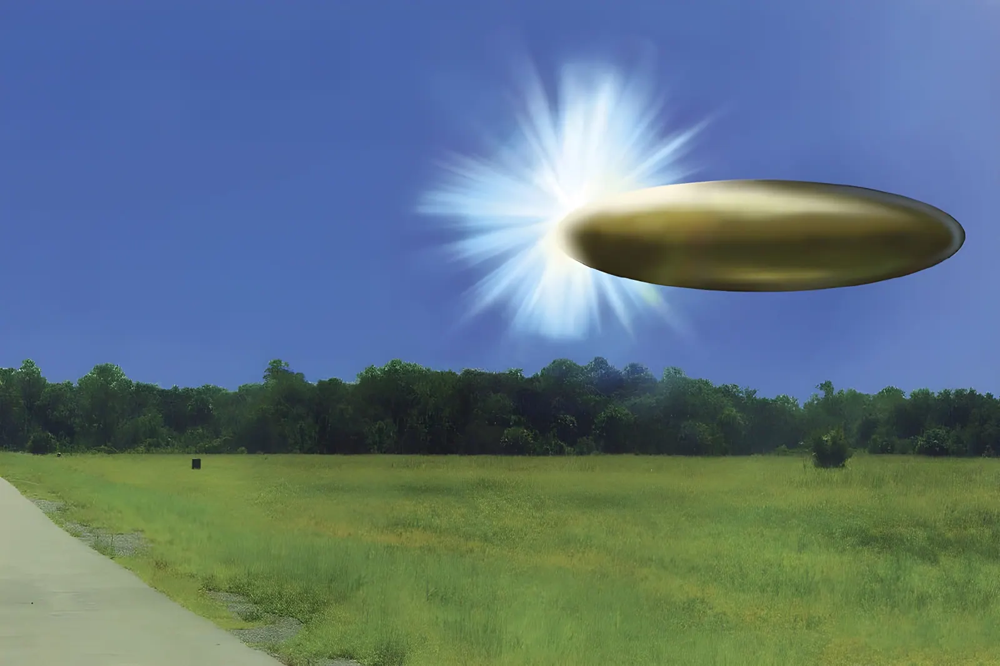

Le 8 mai 2026, le gouvernement américain a rendu publics des milliers de documents, vidéos et photographies jusqu'alors classifiés sur les phénomènes aériens non identifiés. Derrière l'acronyme PURSUE — Presidential Unsealing and Reporting System for UAP Encounters — se cache bien plus qu'un geste de communication : c'est le fruit de décennies de pression parlementaire, de lanceurs d'alerte et d'une demande citoyenne grandissante. Mais la transparence affichée dissimule-t-elle une réalité plus fragmentée ? Retour sur une séquence historique pour la politique de déclassification américaine.
L'histoire officielle des OVNI aux États-Unis commence dès 1947, avec l'incident de Roswell au Nouveau-Mexique, et l'ouverture du Projet SIGN par l'armée de l'air américaine. Rebaptisé GRUDGE puis BLUE BOOK, ce programme d'enquête recense plus de 12 000 signalements entre 1947 et sa dissolution en 1969. Cette fermeture laisse un vide institutionnel de près de quarante ans, durant lequel les observations continuent, sans cadre officiel pour les traiter.
La résurgence de l'intérêt institutionnel est amorcée discrètement en 2007, avec le programme AAWSAP — Advanced Aerospace Weapon System Applications Program — financé à hauteur de 22 millions de dollars par le Pentagone, suivi par le programme AATIP — Advanced Aerospace Threat Identification Program — dirigé par Luis Elizondo. C'est en 2020 que le sujet bascule dans le débat public : la Navy publie trois vidéos classifiées (Tic Tac, Gimbal, GoFast) montrant des interactions entre pilotes de chasse et objets non identifiés aux caractéristiques de vol inexpliquées. En 2022, le Congrès crée l'AARO — All-domain Anomaly Resolution Office — chargé de centraliser et d'analyser tous les signalements en provenance des forces armées et des services de renseignement.
Le 26 juillet 2023, une audition publique devant la commission de supervision de la Chambre des représentants marque un moment charnière. David Grusch, ancien colonel de l'armée de l'air et représentant du Bureau national de reconnaissance auprès de la task force UAP du Pentagone, témoigne sous serment aux côtés des pilotes Ryan Graves et David Fravor. Il affirme avoir été informé, dans le cadre de ses fonctions officielles, de l'existence d'un « programme pluridécennal de récupération et de rétro-ingénierie d'engins UAP » auquel l'accès lui avait été refusé. Il évoque également la récupération de restes biologiques « non humains » associés à certains crashs.
Ces déclarations suscitent une réaction immédiate de Sean Kirkpatrick, alors directeur de l'AARO, qui les juge non étayées. L'inspecteur général de la communauté du renseignement avait néanmoins jugé la plainte de Grusch « crédible et urgente » — une qualification procédurale qui a déclenché des obligations de notification au Congrès, sans valider pour autant les allégations de fond. En mars 2024, l'AARO publie son rapport historique (Volume I) : après examen des archives gouvernementales depuis 1945, aucune preuve empirique de technologies extraterrestres ni de programmes de rétro-ingénierie cachés n'est identifiée.
Le 19 février 2026, Donald Trump publie sur Truth Social une directive ordonnant aux agences fédérales d'identifier, d'examiner et de déclassifier l'ensemble des documents relatifs aux phénomènes aériens non identifiés, à la vie extraterrestre et aux OVNI. De cette instruction naît PURSUE — Presidential Unsealing and Reporting System for UAP Encounters —, un programme interagences coordonné par le Département de la Guerre (anciennement Département de la Défense), en lien avec l'ODNI, le FBI, la NASA, le Département de l'Énergie et l'AARO.
Le 8 mai 2026, la première vague de déclassification est rendue publique sur le portail war.gov/ufo, sans condition d'accréditation. Elle comprend 120 PDF, 28 vidéos et 14 fichiers image, couvrant des incidents militaires entre 2020 et 2026 ainsi que des documents historiques remontant à 1947. Les vidéos, d'une durée totale de 41 minutes, montrent principalement des images infrarouge de points lumineux captés par des aéronefs militaires. Parmi les pièces les plus commentées figurent des photographies des missions Apollo 12 et Apollo 17 montrant des phénomènes lumineux non identifiés, ainsi qu'un dépêche diplomatique de l'ambassade américaine au Tadjikistan datant de 1994, relatant l'observation d'un objet à 41 000 pieds d'altitude par un équipage commercial.
Le Projet Blue Book recense plus de 12 000 signalements d'OVNI. À sa clôture, 701 cas restent officiellement « non expliqués ».
La Navy déclassifie trois vidéos (Tic Tac, Gimbal, GoFast) montrant des interactions entre pilotes militaires et objets non identifiés. C'est la première reconnaissance officielle moderne de phénomènes inexpliqués.
Le Congrès crée l'AARO — All-domain Anomaly Resolution Office — chargé de centraliser et d'analyser tous les signalements UAP des forces armées et du renseignement.
L'ex-officier David Grusch témoigne devant la Chambre, affirmant l'existence d'un programme secret de récupération d'engins non humains. L'AARO réfutera ces allégations en mars 2024.
Le rapport annuel AARO-ODNI recense 757 nouveaux signalements et 1 652 cas cumulés. Aucune preuve d'origine extraterrestre n'est identifiée ; moins de 2,5 % des cas présentent des caractéristiques vraiment inexpliquées.
Première vague PURSUE : 162 fichiers — 120 PDF, 28 vidéos, 14 images — mis en ligne sur war.gov/ufo, accessibles sans accréditation. De nouvelles tranches doivent suivre toutes les quelques semaines.
La rhétorique de « transparence historique » affichée par l'administration Trump se heurte à plusieurs réalités. Sur les 162 fichiers publiés, 108 comportent des caviardages, soit les deux tiers du corpus. Le Département de la Guerre justifie ces occultations par la protection des témoins, des sites militaires et des méthodes de renseignement — des motifs légitimes, mais qui creusent l'écart entre les promesses d'ouverture totale et la réalité des archives consultables. La NASA n'a pas commenté officiellement les photographies Apollo déclassifiées ; l'agence spatiale avait auparavant attribué des anomalies similaires à des conditions lunaires connues.
Les analystes de défense soulignent par ailleurs que l'augmentation spectaculaire des signalements — passée de quelques dizaines par an au début des années 2000 à plus de 750 sur une seule période de treize mois — est au moins en partie liée à la professionnalisation des procédures de signalement dans l'armée, et non à une hausse réelle du nombre de phénomènes observés. Le directeur de l'AARO Jon Kosloski résume la position officielle : l'immense majorité des cas résolus s'explique par des ballons, des drones ou des oiseaux ; les rares cas résiduellement inexpliqués font l'objet d'études approfondies, sans que la piste extraterrestre soit pour autant confirmée.
La déclassification des dossiers OVNI dépasse le cadre anecdotique d'une curiosité populaire. Elle illustre une tension structurelle dans les démocraties contemporaines : comment concilier les impératifs de sécurité nationale — protection des sources, des méthodes, des sites — avec les attentes croissantes de transparence d'une opinion publique mieux informée ? Que les archives révèlent des phénomènes inexpliqués ou simplement des lacunes dans la chaîne de traitement des données, la vraie question reste celle du contrôle démocratique sur les programmes classifiés : qui surveille les gardiens, et au nom de qui ces décisions de secret sont-elles prises ?
On 8 May 2026, the US government made public thousands of previously classified documents, videos and photographs relating to unidentified anomalous phenomena. Behind the acronym PURSUE — Presidential Unsealing and Reporting System for UAP Encounters — lies far more than a public relations exercise: it is the product of decades of congressional pressure, whistleblower testimony, and a growing public demand for accountability. But does the government's stated transparency conceal a more fragmented reality? A look back at a historic moment in American declassification policy.
The official American history of UFOs begins in 1947, with the Roswell incident in New Mexico and the launch of Project SIGN by the US Air Force. Renamed GRUDGE and then BLUE BOOK, the investigative programme catalogued more than 12,000 sightings between 1947 and its dissolution in 1969. That closure left an institutional vacuum lasting nearly four decades, during which reported sightings continued without any formal framework to handle them.
Institutional interest was quietly revived in 2007 with the AAWSAP — Advanced Aerospace Weapon System Applications Program — funded at $22 million by the Pentagon, followed by the AATIP — Advanced Aerospace Threat Identification Program — run by Luis Elizondo. The subject shifted into public debate in 2020, when the Navy released three declassified videos (Tic Tac, Gimbal, GoFast) showing interactions between fighter pilots and objects displaying flight characteristics that defied conventional explanation. In 2022, Congress established AARO — the All-domain Anomaly Resolution Office — to centralise and analyse all reports from the armed forces and the intelligence community.
On 26 July 2023, a public hearing before the House Oversight Committee marked a turning point. David Grusch, a former Air Force colonel and the National Reconnaissance Office's representative to the Pentagon's UAP task force, testified under oath alongside pilots Ryan Graves and David Fravor. He stated that in the course of his official duties he had been informed of a "multi-decade UAP crash retrieval and reverse-engineering programme" to which he had been denied access. He also alleged the recovery of "non-human biological material" associated with certain craft.
These claims prompted an immediate rebuttal from AARO Director Sean Kirkpatrick, who characterised them as unsubstantiated. The Intelligence Community Inspector General had nonetheless judged Grusch's complaint "credible and urgent" — a procedural determination that triggered congressional notification requirements, without validating the underlying allegations. In March 2024, AARO published its Historical Record Report (Volume I): after examining government archives since 1945, no empirical evidence of extraterrestrial technology or concealed reverse-engineering programmes was found.
On 19 February 2026, Donald Trump posted a directive on Truth Social instructing federal agencies to identify, review, and declassify all documents relating to unidentified anomalous phenomena, extraterrestrial life, and UFOs. From this instruction came PURSUE — the Presidential Unsealing and Reporting System for UAP Encounters — an interagency programme coordinated by the Department of War, working in conjunction with ODNI, the FBI, NASA, the Department of Energy, and AARO.
On 8 May 2026, the first declassification batch was made publicly available on the war.gov/ufo portal, with no security clearance required. It comprises 120 PDFs, 28 videos, and 14 image files, covering military incidents between 2020 and 2026 as well as historical documents dating back to 1947. The videos, totalling 41 minutes of footage, primarily show infrared imagery of luminous points captured by military aircraft. Among the most widely discussed items are photographs from the Apollo 12 and Apollo 17 missions showing unidentified luminous phenomena, and a diplomatic cable from the US Embassy in Tajikistan dating from 1994 describing a commercial flight crew's sighting of an object at 41,000 feet.
Project Blue Book catalogues more than 12,000 UFO reports. At its closure, 701 cases remain officially "unexplained."
The Navy declassifies three videos (Tic Tac, Gimbal, GoFast) showing interactions between military pilots and unidentified objects. The first modern official acknowledgement of unexplained phenomena.
Congress establishes AARO — the All-domain Anomaly Resolution Office — to centralise and analyse all UAP reports from the armed forces and intelligence agencies.
Former officer David Grusch testifies before the House, alleging a secret programme for the recovery of non-human craft. AARO will refute these allegations in March 2024.
The annual AARO-ODNI report logs 757 new reports and 1,652 cumulative cases. No evidence of extraterrestrial origin is identified; fewer than 2.5% of cases present genuinely unexplained characteristics.
First PURSUE batch: 162 files — 120 PDFs, 28 videos, 14 images — published on war.gov/ufo, freely accessible. Further tranches are scheduled every few weeks on a rolling basis.
The Trump administration's rhetoric of "historic transparency" runs up against several concrete realities. Of the 162 files released, 108 contain redactions — two thirds of the entire corpus. The Department of War justifies these omissions on grounds of protecting witnesses, military sites, and intelligence methods: legitimate reasons, but ones that widen the gap between the promise of total openness and the reality of the consultable archives. NASA has not officially commented on the declassified Apollo photographs; the agency had previously attributed similar anomalies to known lunar conditions.
Defence analysts also note that the dramatic surge in reported sightings — from a few dozen annually in the early 2000s to over 750 in a single 13-month window — is at least partly attributable to the professionalisation of reporting procedures within the military, rather than to any actual increase in observed phenomena. AARO Director Jon Kosloski summarises the official position: the vast majority of resolved cases are explained by balloons, drones, or birds; the small number of residually unexplained cases are under study, without the extraterrestrial hypothesis being confirmed.
The opening of the UFO archives goes well beyond the anecdotal sphere of popular curiosity. It illustrates a structural tension in contemporary democracies: how to reconcile national security imperatives — protection of sources, methods, and sites — with the growing expectations of a better-informed public? Whether the archives reveal genuinely unexplained phenomena or simply gaps in data-processing chains, the real question remains that of democratic oversight over classified programmes: who watches the watchers, and in whose name are these decisions about secrecy made?